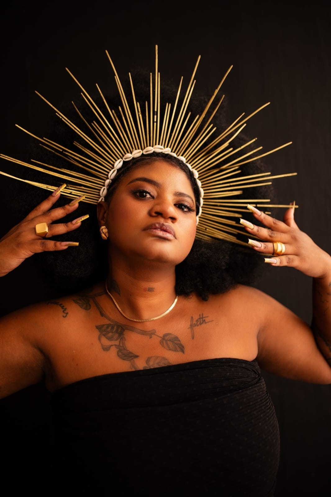
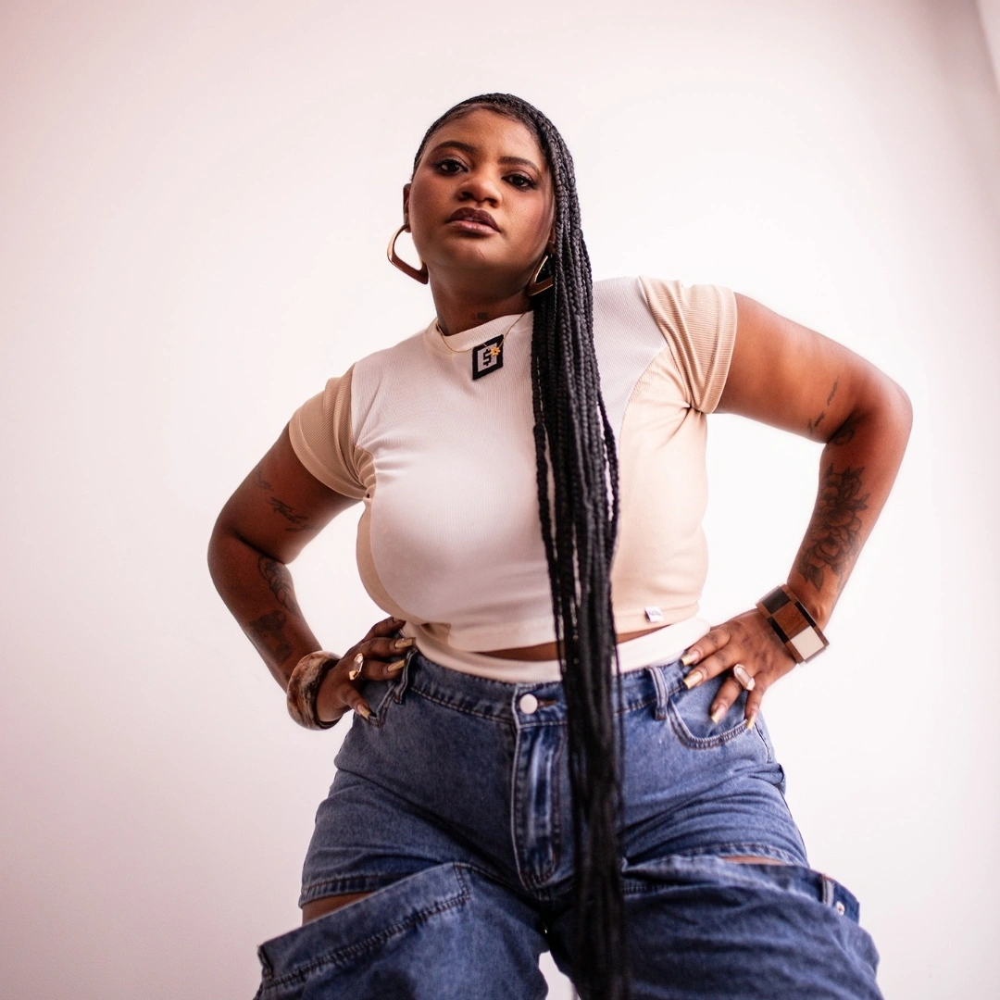
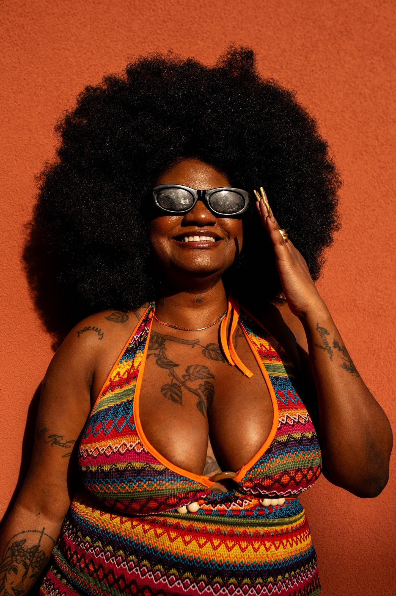
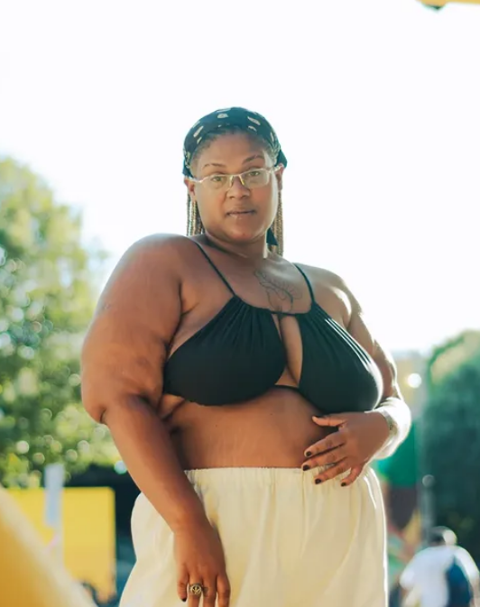
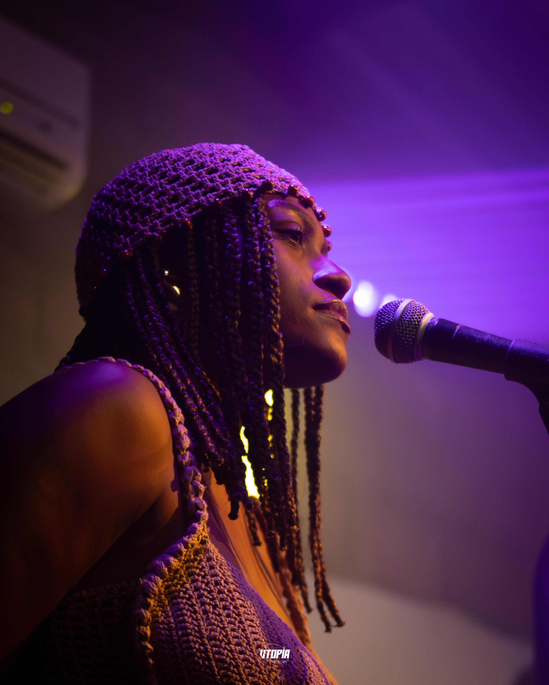
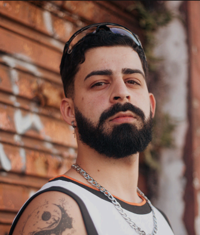
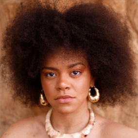

POLLY
MAGALHÃES

A História
Rapper, poetisa e produtora cultural nascida em Uberaba/MG, Polly Magalhães utiliza o rap como sua principal linguagem narrativa para traduzir o mundo ao seu redor. Sua música é um espelho de sua identidade: uma obra visceral que transita entre o amor, o desamor, a saúde mental e as profundas nuances de ser uma mulher preta no Brasil.
Iniciando sua trajetória em 2015, quando começou a dar forma às suas primeiras composições, Polly construiu um caminho marcado pela autenticidade. Em 2021, o single “Até Aqui” marcou sua estreia oficial, abrindo portas e consolidando sua presença ativa nos eventos culturais de sua cidade natal.
A evolução artística de Polly é um processo constante de autorreflexão. Em 2025, ela deu um passo importante com o EP "Ouro", um projeto que fundiu música e audiovisual para explorar o autoconhecimento, a autoestima e o fortalecimento da mulher preta, em uma narrativa potente sobre espiritualidade e autoamor.
Expandindo sua voz em 2026, a artista lançou o single "Fato Verídico", uma faixa corajosa que encara a violência contra a mulher e a urgência da autoproteção. Dando sequência a esse momento, apresenta seu mais recente trabalho: o EP "Tudo Sobre Desamor, Nem Tudo!". Lançado em julho de 2026, o projeto convida o ouvinte a percorrer as faces mais complexas dos afetos — das relações idealizadas ao doloroso processo de cura, da coragem de partir à capacidade de deixar o coração aberto para o novo.
Influenciada pelas raízes do hip-hop, do charme e da música preta, Polly Magalhães não apenas canta; ela constrói um legado de cura, resistência e verdade.

VÍDEOS
Show
Ouro Pras Nega (Clipe)
Mini Doc
Tudo Sobre Desamor, Nem Tudo

Um diário rasgado de sentimentos expostos. Rimas sujas, batidas pesadas e a dor transformada em combustível. Uma estética de caderno velho, caneta vermelha e coração partido.
OURO

A ascensão. O brilho que ofusca. Uma sonoridade luxuosa e potente que reflete a conquista do espaço. Batidas ricas, flows milionários e a coroa pesada na cabeça.
EQUIPE

POLLY MAGALHÃES
MC / Performer

DJ XUXU
DJ

NAIA
Backing Vocal

GUSTAVO
Dançarino

RAÍSSA
Dançarina